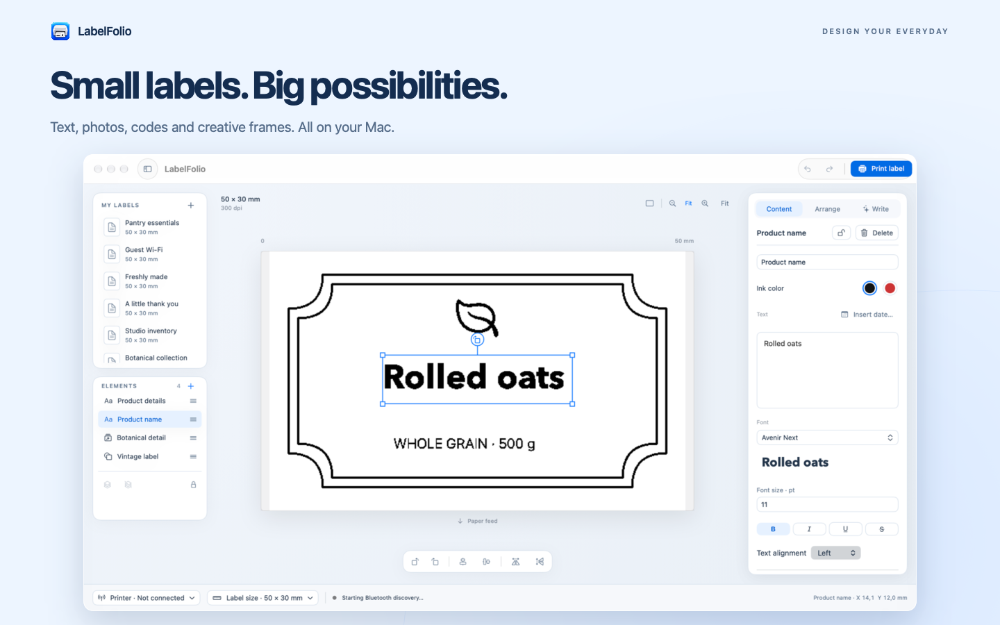
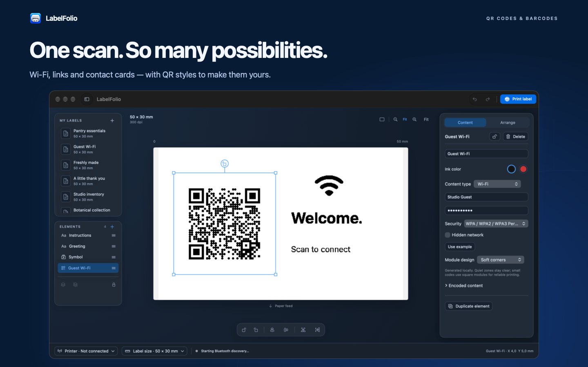
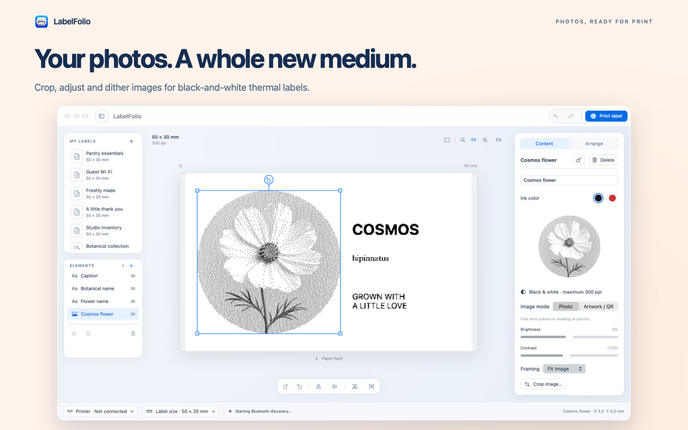
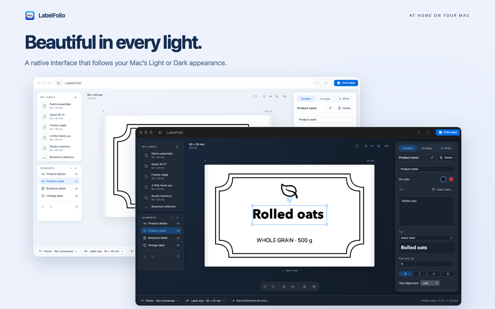

Text with personality
Preview your installed fonts, style your text and edit it directly on the canvas. Add fixed dates or smart dates that update when you print.
Turn text, photos and useful codes into labels that make everyday life a little more organised.
Apple silicon · macOS 14 or later
Mac App Store release in preparation
A familiar Mac workspace, with room to make it your own. Open any screenshot for a closer look.

Text, photos, codes and creative frames in one native editor.

QR codes for Wi-Fi, links, contact cards and more.

Crop, adjust and dither images for thermal printing.

Light and Dark appearances that follow your Mac.
From pantry jars and storage boxes to cable tags and inventory labels, make each detail your own.
Preview your installed fonts, style your text and edit it directly on the canvas. Add fixed dates or smart dates that update when you print.
Make QR codes for links, Wi-Fi, contact cards and more. Choose different QR styles, or add Code 128, Aztec and PDF417 barcodes.
Drop in images from Finder or Photos. Crop to a rectangle or circle and adjust brightness, contrast and dithering for black-and-white printing.
Combine shapes, symbols and over 50 scalable frames, including Polaroid, botanical and retro styles. Resize and rotate to suit your label.
Arrange elements with snapping, alignment and equal spacing. Reorder, group and lock them, then switch between Light and Dark with your Mac.
Save designs in My Labels or portable .labelfolio files with embedded images. Export a PNG or a PDF that matches your label’s physical dimensions.
LabelFolio has no app accounts, advertising, tracking or developer-operated cloud service. Optional writing suggestions use Apple’s on-device Foundation Models on eligible Macs.
Read the privacy policy →Bluetooth printing needs compatible hardware and thermal stock. NIIMBOT B1 Pro monochrome printing has been tested with a physical printer. Other model profiles are experimental; compatibility depends on the model and firmware.
Get setup help →Apple Intelligence writing requires macOS 26 or later, supported hardware and available on-device models. Manual design tools work without it.